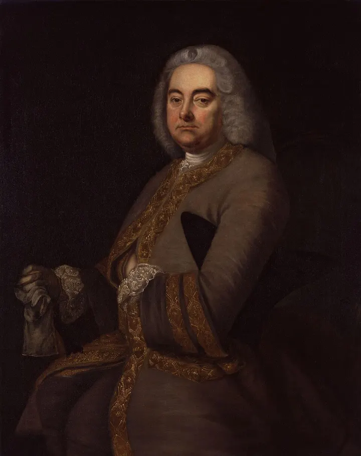

Music pioneer · Baroque · Composer arrangement studio
George Frideric Handel
Choose the “Hallelujah” chorus, then press Play. It is the full score: oboes, bassoons, trumpets, timpani, strings and the four voices of the choir. Isolate the Soprano staff to follow the tune, then the Bass staff to hear the low voices launch “And He shall reign” on their own in bar 41. Playback uses sampled or synthesized instruments; consult the linked edition for fingering, bowing, pedaling, and expressive detail.
Arranging with care
A source staff is not always the melody: in an orchestral score, find the staff carrying the theme. A two-part piano study pairs your selected voice with a source bass; it is not a concert reduction and wide leaps may need redistribution. Saxophone notation is transposed while playback stays at concert pitch. Violin parts stay at concert pitch and are moved by octaves to sit above the open G string. Guitar tab preserves pitch and rhythm but may need a different octave or fingering. Original ensembles are available only where the source contains those parts. Piano reductions and original classroom studies retain their source identities.
Recordings: Nicholaus P. Brosowsky’s Tonejs-Instruments sample collection, CC BY 3.0; VSCO 2 Community Edition, CC0. Sample credits and processing.
Music pioneer · Baroque · 1685–1759
About George Frideric Handel

George Frideric Handel (1685–1759) was born in Germany the same year as J. S. Bach, trained in Italy, and spent almost fifty years in London writing operas, oratorios and music for kings. His Messiah has been performed every year since 1742, and its “Hallelujah” chorus may be the most famous choral music ever written.
Life and context
Handel was born in Halle, in central Germany, on 23 February 1685 (5 March in today’s calendar). His father, a barber-surgeon, wanted him to become a lawyer and discouraged music, but the boy practised on a small keyboard instrument and was eventually allowed lessons with Friedrich Wilhelm Zachow, organist of Halle’s Market Church. Zachow taught him organ, harpsichord, violin and oboe, and had him copy and imitate the best music he could find.
At eighteen he left for Hamburg, the busiest opera house in Germany, playing violin and harpsichord in the orchestra; his first opera, Almira, was staged there in 1705. From 1706 to 1710 he lived in Italy, in Florence, Rome, Naples and Venice. There he learned to write long, singing melodies for voices, and his opera Agrippina was a triumph in Venice in 1709.
In 1710 he became music director to the Elector of Hanover, and that autumn he visited London. His opera Rinaldo (1711) was the first Italian opera written for the London stage, and he soon settled in England for good. When the Elector became King George I in 1714, Handel’s old employer was suddenly his king. The Water Music (1717) was played for George I from a barge on the River Thames.
For twenty years Handel ran opera companies in London, writing works such as Giulio Cesare (1724) and becoming a British subject in 1727. That year he wrote four anthems for the coronation of George II; one, Zadok the Priest, has been sung at every British coronation since. When Italian opera fell out of fashion in the 1730s he turned to the English oratorio: a sacred drama sung in English, in a concert hall, with no costumes or scenery and with the chorus at its heart.
Messiah was composed in about three and a half weeks in August and September 1741, to words arranged from the Bible by Charles Jennens. It was first performed in Dublin on 13 April 1742 at a charity concert, and from 1750 Handel conducted it every year to raise money for London’s Foundling Hospital, a home for abandoned children. In 1749 his Music for the Royal Fireworks celebrated the end of the War of the Austrian Succession; a public rehearsal is said to have drawn about 12,000 people.
Handel went blind in his last years but kept directing performances and playing organ concertos from memory. He died in London on 14 April 1759, eight days after leading a performance of Messiah, and was buried in Westminster Abbey. His music never fell out of use, which is rare for the Baroque era, and Beethoven is reported to have called him the greatest composer who ever lived.
George Frideric Handel: a timeline
- Born in Halle, Germany, on 23 February (5 March in today’s calendar), a month before J. S. Bach.
- Moves to Hamburg to play in the opera orchestra.
- His first opera, Almira, is staged in Hamburg.
- Agrippina is a triumph in Venice.
- Rinaldo, the first Italian opera written for London, opens.
- The Water Music is played for George I on the Thames.
- Becomes a British subject and writes Zadok the Priest for George II’s coronation.
- Composes Messiah in about three and a half weeks.
- Messiah is first performed in Dublin on 13 April.
- Music for the Royal Fireworks is performed in Green Park, London.
- Dies in London on 14 April and is buried in Westminster Abbey.
Chords and chases: writing for a chorus
A chorus can sing in two very different ways. In homophony every voice moves together in block chords, like one giant voice: the opening “Hallelujah!”s and “King of Kings” are written this way, so every word is clear and strong.
In imitation (counterpoint) the voices chase each other: one section sings a melody and the others enter with the same melody, one after another. At bar 41 of the “Hallelujah” chorus the basses sing “And He shall reign for ever and ever” alone, then the tenors, altos and sopranos take it up. Handel switches between the two textures to build excitement, then brings everyone back together for the biggest moments.
Music pioneer · Baroque
Sound experiment: chords and chases
Version A sings a short tune in four voices moving together. Version B sends the same tune through the four voices one after another, lowest first. Which sounds like a crowd shouting together, and which sounds like the idea spreading through the crowd?
This is an original classroom demonstration of a musical idea, not an excerpt or recording of the composer’s work.
Choose a version, then press Play.
Guided listening
Choose a performance of one of these works. Listen once for its overall character, then again for the detail in the prompt.
- “Hallelujah” from Messiah: listen for the moments when the whole choir sings in rhythm together and the moments when one section starts alone.
- Zadok the Priest: count how long the strings’ rising, rippling introduction lasts before the choir bursts in.
- Water Music, “Alla Hornpipe”: hear the trumpets and horns answer the strings, music made to carry across a river.
Practice and reflection
- In the “Hallelujah” chorus, follow the Soprano staff from bar 52 to bar 68. Each long “King of Kings” note is one step higher than the last. Name the notes.
- Mute every staff except Bass, Tenor, Alto and Soprano and play bars 41–51. In what order do the four voices enter with “And He shall reign”?
- Play the Air in B♭. Its first half ends in F major (bar 12); where does the second half finally come home to B♭?
Check your listening
The choir sings in block chords for the “Hallelujah!”s and “King of Kings” (homophony), and in a chase at “And He shall reign”, where the basses start alone and the others follow (imitation). The rising sustained soprano notes in bars 52–68 climb A, D, E, F♯, G. A useful answer names a feature you can hear and explains its effect. More than one interpretation is possible.
Use the heart | save pill to keep these notes in this browser, or copy them before leaving.